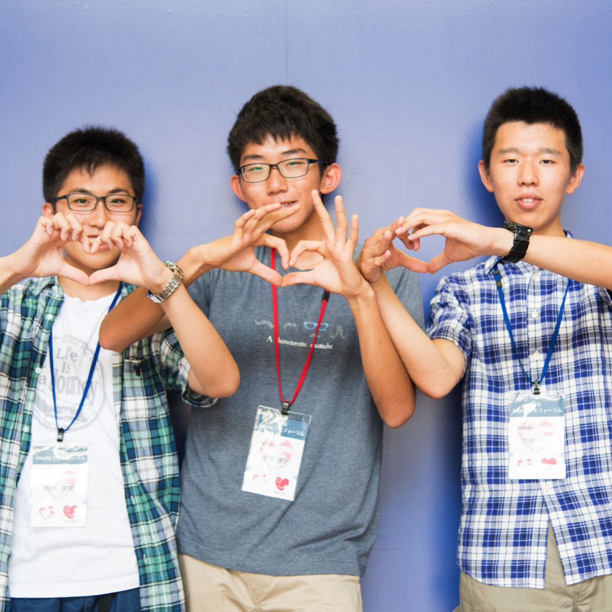

CONTENTS
タップするとそれぞれの詳細がご覧いただけます。
登壇者
大阪府知事
♦松井 一郎 知事 (予定)
昭和３９年（１９６４年） １月３１日 大阪府生まれ
昭和６１年（１９８６年） ３月 福岡工業大学工学部電気工学科卒業
昭和６１年（１９８６年） ４月 民間勤務
平成１５年（２００３年） ４月 大阪府議会議員（３期連続当選）
平成２３年（２０１１年） １１月 大阪府知事（１期目）
平成２７年（２０１５年） １１月 大阪府知事（２期目）
大阪府知事
♦松井 一郎 知事 (予定)
昭和３９年（１９６４年） １月３１日 大阪府生まれ
昭和６１年（１９８６年） ３月 福岡工業大学工学部電気工学科卒業
昭和６１年（１９８６年） ４月 民間勤務
平成１５年（２００３年） ４月 大阪府議会議員（３期連続当選）
平成２３年（２０１１年） １１月 大阪府知事（１期目）
平成２７年（２０１５年） １１月 大阪府知事（２期目）
♦「若者からの100の提言」編集委員(高校生・大学生)
内容
大阪府が2025年の招致を目指す万国博覧会(万博)、そのテーマは「健康・長寿」。未来を担って活躍する高校生〜大学生が「2025大阪万博誘致 若者からの100の提言」を発表し、大阪府に提出するセレモニーを開催します。健康・ヘルスケアの未来を宣言する、「未来への提言」セッション。ヘルスケアの大きな未来が、ここで描かれます。
登壇者
予防医療普及協会 発起人
♦堀江 貴文 氏
1972年、福岡県生まれ。SNS media＆consulting株式会社ファウンダー。
現在は宇宙ロケット開発や、スマホアプリ「TERIYAKI」「755」「マンガ新聞」のプロデュースを手掛けるなど幅広く活動を展開。
有料メールマガジン「堀江貴文のブログでは言えない話」の読者は1万数千人の規模に。
2014年8月には会員制のコミュニケーションサロン「堀江貴文イノベーション大学校」（http://salon.horiemon.com/ ）をスタートした。
近著に『むだ死にしない技術』『99%の会社はいらない』『君はどこにでも行ける』『本音で生きる』など
Twitterアカウント：@takapon_jp
その他、詳細は HORIEMON.COM へ。
予防医療普及協会 発起人
♦堀江 貴文 氏
1972年、福岡県生まれ。SNS media＆consulting株式会社ファウンダー。
現在は宇宙ロケット開発や、スマホアプリ「TERIYAKI」「755」「マンガ新聞」のプロデュースを手掛けるなど幅広く活動を展開。
有料メールマガジン「堀江貴文のブログでは言えない話」の読者は1万数千人の規模に。
2014年8月には会員制のコミュニケーションサロン「堀江貴文イノベーション大学校」（http://salon.horiemon.com/ ）をスタートした。
近著に『むだ死にしない技術』『99%の会社はいらない』『君はどこにでも行ける』『本音で生きる』など
Twitterアカウント：@takapon_jp
その他、詳細は HORIEMON.COM へ。

日本AED財団専務理事 PUSHプロジェクト 代表
京都大学 環境安全保健機構 教授
♦石見 拓 先生
1996年、群馬大学医学部卒業。循環器内科医として研鑽を積む中で、心臓病患者の多くは病院に搬送される前に亡くなり、病院到着後の治療ではこのような方達を救えない事実に直面。病院前救急医療体制の充実や心肺蘇生普及の重要性を知る。その後、心肺蘇生にかかわる研究に参加するため、大阪に移り、病院外で心停止となった方々に対する救急医療体制を検証するプロジェクトに参画。大阪大学医学部医学研究科・生態統合医学(救急医学)博士課程修了。京都大学大学院医学研究科・臨床研究者養成コース修了、2006年4月より現職。
日本AED財団専務理事
PUSHプロジェクト 代表
京都大学 環境安全保健機構 教授
♦石見 拓 先生
1996年、群馬大学医学部卒業。循環器内科医として研鑽を積む中で、心臓病患者の多くは病院に搬送される前に亡くなり、病院到着後の治療ではこのような方達を救えない事実に直面。病院前救急医療体制の充実や心肺蘇生普及の重要性を知る。その後、心肺蘇生にかかわる研究に参加するため、大阪に移り、病院外で心停止となった方々に対する救急医療体制を検証するプロジェクトに参画。大阪大学医学部医学研究科・生態統合医学(救急医学)博士課程修了。京都大学大学院医学研究科・臨床研究者養成コース修了、2006年4月より現職。
日本AED財団実行委員(モデレーター)
♦島本 大也 氏
山口県下関市の離島、彦島生まれ。大阪大学を卒業後、看護師として高槻病院へ就職。循環器内科に1年、ICUに５年勤務した後、臨床での自分に限界を感じ、京都大学大学院医学研究科へ進学。臨床研究の方法を学びつつ、その結果を活かした心肺蘇生法の普及と、AEDの活用に尽力している。シルバ○アファミリーの中へAEDが自然に置かれるくらい、心肺蘇生とAEDが常識になればいいな、と思い活動中。趣味は筋トレ、ランニング、テレビゲーム。
日本AED財団実行委員(モデレーター)
♦島本 大也 氏
山口県下関市の離島、彦島生まれ。大阪大学を卒業後、看護師として高槻病院へ就職。循環器内科に1年、ICUに５年勤務した後、臨床での自分に限界を感じ、京都大学大学院医学研究科へ進学。臨床研究の方法を学びつつ、その結果を活かした心肺蘇生法の普及と、AEDの活用に尽力している。シルバ○アファミリーの中へAEDが自然に置かれるくらい、心肺蘇生とAEDが常識になればいいな、と思い活動中。趣味は筋トレ、ランニング、テレビゲーム。
内容
治療のその前に、生活習慣の改善などにより”病気にならないようにする”医療のアプローチ「予防医療」が注目されています。その予防医療の普及を目指す「予防医療普及委員会」の発起人、堀江貴文氏と、予防的アプローチによる効果が期待される心臓突然死減少に取り組む石見拓氏とのパネルディスカッション。ヘルスケアの未来を”今”創っている「先駆者に学ぶ」セッションです。
登壇者
-
[TEAM]リトルジェネトーク
「やっぱ助けたいねん手帳」
-
[TEAM]シロイヌまりこ
君に届けAED
-
[TEAM]
HippocratersThe Revolutionary of New Medicine
-
[TEAM]AEDi
AEDi
-
[TEAM]
Wild Idea運動会新競技！「救命の連鎖」でAEDとの壁をなくせ！
-

[TEAM]
LIFEingLIFEing
審査員
-
石見 拓 氏
日本AED財団
専務理事
PUSHプロジェクト
代表
京都大学
環境安全保健機構
教授 -
Dr.LEKH RAJ JUNEJA 氏
(ジュネジャ
レカ ラジュ)ロート製薬株式会社
取締役副社長
-
塚本 廉 氏
シリアル
アントレプレナー
-

野崎 慎仁郎 氏
WHO健康開発
総合研究センター
上級顧問官 -

八木 雅和
先生ジャパン
バイオデザイン
プログラム
ディレクター
大阪大学国際
医工情報センター
特任准教授
内容
年間約76,000人が突然の心肺機能停止で救急搬送され、そのうち市民によって目撃されて生存した割合はたった4%。この「日本の心臓突然死」の問題を解決するために、5ヶ月間に及ぶ教育プログラムとプラン立案・実行を経た高校生と大学生が、そのアイデアを発表します。
出場チームは、応募した中高生190名から選抜された教育プログラム参加者60名22チームから勝ち上がった高校生3チームと、70名の応募から参加した50名17チームより出場権を獲得した国内外の大学生3チームの計6チーム。審査員によって、その中から最優秀チームが決定されます。
若者たちの「今起こすアクション」。その熱意と行動力を感じてください。
これまでの歩み
VENUE
グランフロント大阪北館B2F コングレコンベンションセンター
ORGANIZER
運営団体・共催団体について
主催団体inochi学生プロジェクトについて
一般社団法人inochi未来プロジェクトと連携しながら、「若者の力でヘルスケアの問題を解決する」という目的の下活動する京都大学・大阪大学の学生が中心となって動いている自主プロジェクトです。
活動の軸は‘若者の力でヘルスケア問題を解決すること’
新しい技術のヘルスケアへの応用模索と地域のヘルスケア問題の解決に取り組みながら真に‘ innovative’なイノベーションを生み出すことのできる若手人材を生み出すことを目標としています。
共催団体inochi未来プロジェクトについて

「みんなでinochiの大切さと未来について考え、行動するプロジェクト」。
医療者・企業・行政そして市民と患者も。関西・日本が、みんなでささえあいながら、健康で長生きできる街・国になることをめざします。
2014年6月にinochi未来プロジェクト実行委員会を立ち上げ、今後、関西発の健康・医療イノベーションを加速させるべく2015年11月に一般社団法人inochi未来プロジェクトへと発展いたしました。
inochi未来プロジェクトWebサイト